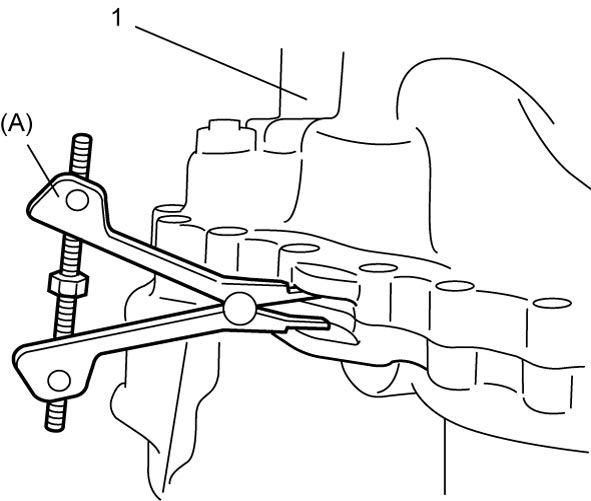
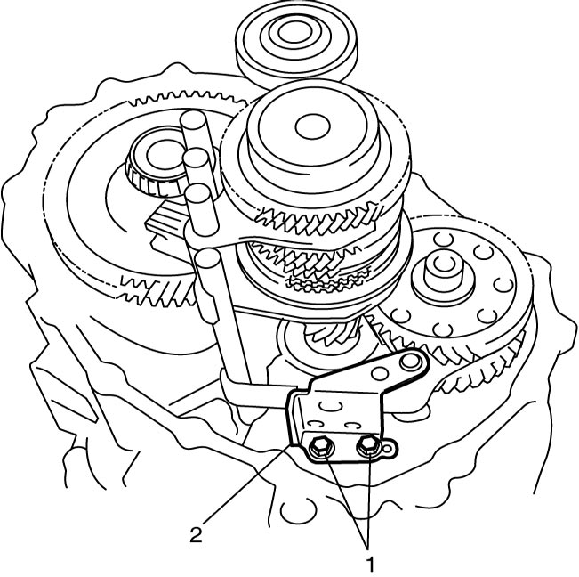
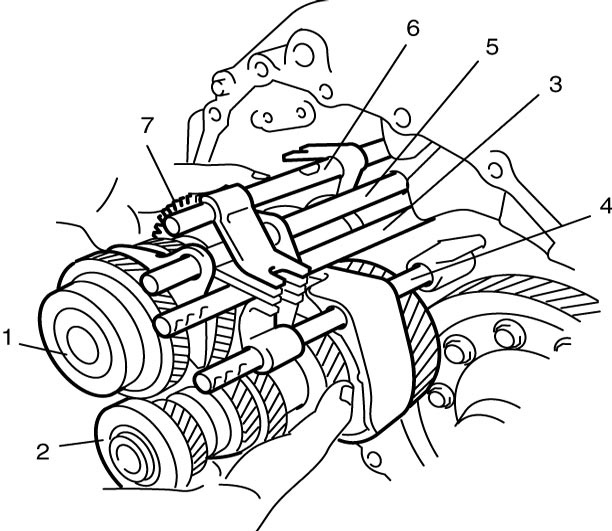
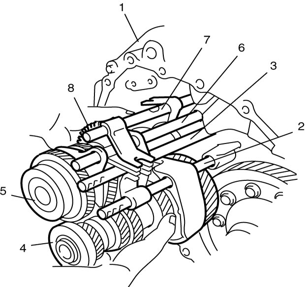
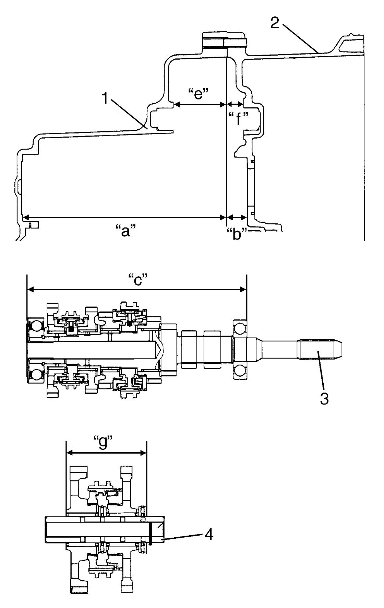
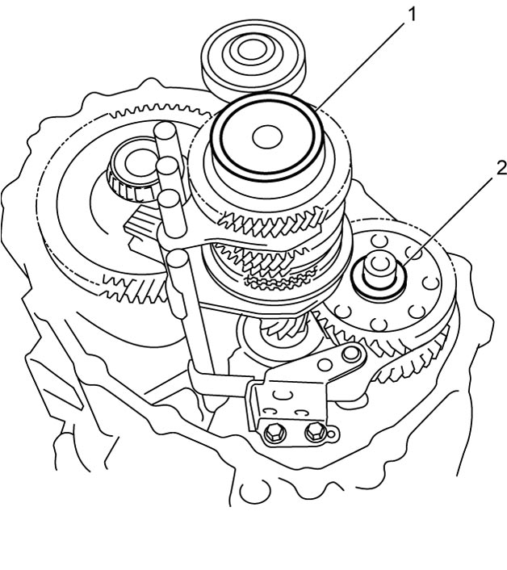
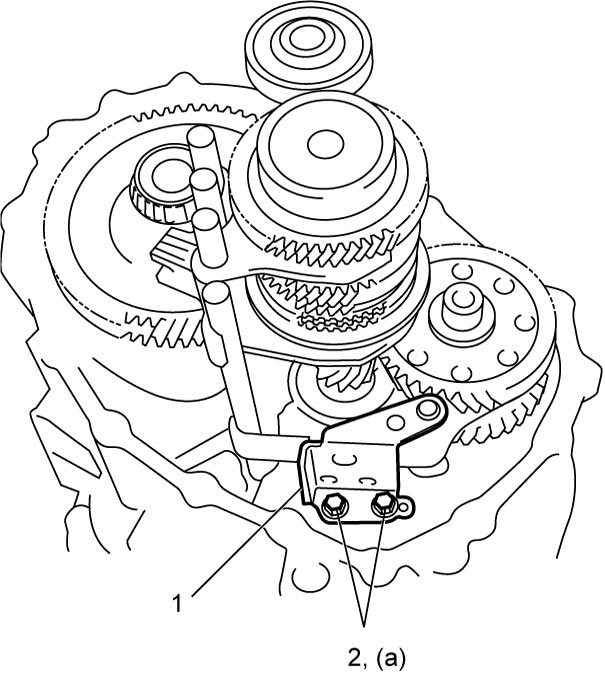
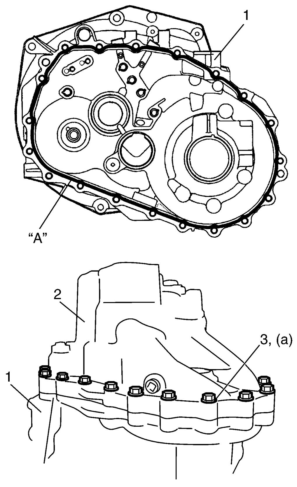

5B
| Manual Transaxle Assembly Disassembly and Reassembly |
Disassembly
1)Remove back up light switch. 
2)Remove gear shift and select shaft assembly.
3)Remove transaxle case bolts.
4)Remove transaxle left side case (1) from right case using special tool.


 "Expand image")
5)Remove reverse gear shift lever bolts (1) and reverse gear shift lever (2).

 "Expand image")
6)Tapping input shaft end with plastic hammer, push it out as assembly from case a little, and then remove input shaft assembly (1), countershaft assembly (2), high speed gear shift shaft (3), low speed gear shift shaft (4), 5th and 6th gear shift shaft (5), reverse gear shift shaft (6) and reverse gears (7).

 "Expand image")
7)Remove differential assembly from transaxle right case.
Reassembly
1)Install differential assembly into transaxle right case.
2)Join input shaft assembly (5), countershaft assembly (4), low speed gear shift shaft (2), high speed gear shift shaft (3), 5th and 6th gear shift shaft (6), reverse gear shift shaft (7) and reverse gears (8) all together, and then install them into transaxle right case (1) so as not to damage oil seal by input shaft spline.
NOTE:
•Input shaft right bearing on shaft can be installed into transaxle right case (1) by tapping shaft with plastic hammer.
•Check that countershaft is engaged with final gear while installing.
•Check that countershaft is engaged with final gear while installing.

 "Expand image")
3)Select input shaft shim and reverse gear shim as follows.
a)Measure depth “a” of transaxle left case (1) and “b” of transaxle right case (2) and measure depth “e” of transaxle left case and “f” of transaxle right case.
b)Measure distance “c” of input shaft assembly (3) and measure distance “g” of reverse gear assembly (4).
c)Calculate the clearance of “d” and “h” by the following formulas.
| Clearance “d” = Depth “a” + Depth “b” – Distance “c” |
| Clearance “h” = Depth “e” + Depth “f” – Distance “g” |

 "Expand image")
d)Select shim closest to clearance “d” and “h” from the following available sizes.
Available shim thickness
| Clearance “d” | Shim thickness |
|---|---|
| 1.055 – 1.095 mm (0.0415 – 0.0431 in.) |
1.04 mm (0.0409 in.) |
| 1.095 – 1.135 mm (0.0431 – 0.0447 in.) |
1.08 mm (0.0425 in.) |
| 1.135 – 1.175 mm (0.0447 – 0.0463 in.) |
1.12 mm (0.0441 in.) |
| 1.175 – 1.215 mm (0.0463 – 0.0478 in.) |
1.16 mm (0.0457 in.) |
| 1.215 – 1.255 mm (0.0478 – 0.0494 in.) |
1.20 mm (0.0472 in.) |
| 1.255 – 1.295 mm (0.0494 – 0.0510 in.) |
1.24 mm (0.0488 in.) |
| 1.295 – 1.335 mm (0.0510 – 0.0526 in.) |
1.28 mm (0.0504 in.) |
| 1.335 – 1.375 mm (0.0526 – 0.0541 in.) |
1.32 mm (0.0520 in.) |
| 1.375 – 1.415 mm (0.0541 – 0.0557 in.) |
1.36 mm (0.0535 in.) |
| 1.415 – 1.455 mm (0.0557 – 0.0573 in.) |
1.40 mm (0.0551 in.) |
| 1.455 – 1.495 mm (0.0573 – 0.0589 in.) |
1.44 mm (0.0567 in.) |
| 1.495 – 1.535 mm (0.0589 – 0.0604 in.) |
1.48 mm (0.0583 in.) |
| 1.535 – 1.575 mm (0.0604 – 0.0620 in.) |
1.52 mm (0.0598 in.) |
| 1.575 – 1.615 mm (0.0620 – 0.0636 in.) |
1.56 mm (0.0614 in.) |
| 1.615 – 1.655 mm (0.0636 – 0.0651 in.) |
1.60 mm (0.0630 in.) |
| 1.655 – 1.695 mm (0.0651 – 0.0667 in.) |
1.64 mm (0.0646 in.) |
| 1.695 – 1.735 mm (0.0667 – 0.0683 in.) |
1.68 mm (0.0661 in.) |
| 1.735 – 1.775 mm (0.0683 – 0.0698 in.) |
1.72 mm (0.0677 in.) |
| 1.775 – 1.815 mm (0.0698 – 0.0714 in.) |
1.76 mm (0.0693 in.) |
| 1.815 – 1.855 mm (0.0715 – 0.0730 in.) |
1.80 mm (0.0709 in.) |
| 1.855 – 1.895 mm (0.0730 – 0.0746 in.) |
1.84 mm (0.0724 in.) |
| 1.895 – 1.935 mm (0.0746 – 0.0761 in.) |
1.88 mm (0.0740 in.) |
| 1.935 – 1.975 mm (0.0761 – 0.0777 in.) |
1.92 mm (0.0756 in.) |
| 1.975 – 2.015 mm (0.0777 – 0.0793 in.) |
1.96 mm (0.0772 in.) |
Available shim thickness
| Clearance “h” | Shim thickness |
|---|---|
| 1.815 – 1.895 mm (0.0715 – 0.0746 in.) |
1.76 mm (0.0694 in.) |
| 1.895 – 1.975 mm (0.0746 – 0.0778 in.) |
1.84 mm (0.0724 in.) |
| 1.975 – 2.055 mm (0.0778 – 0.0809 in.) |
1.92 mm (0.0760 in.) |
| 2.055 – 2.135 mm (0.0809 – 0.0841 in.) |
2.00 mm (0.0787 in.) |
| 2.135 – 2.215 mm (0.0841 – 0.0872 in.) |
2.08 mm (0.0819 in.) |
| 2.215 – 2.295 mm (0.0872 – 0.0904 in.) |
2.16 mm (0.0850 in.) |
| 2.295 – 2.375 mm (0.0904 – 0.0935 in.) |
2.24 mm (0.0882 in.) |
| 2.375 – 2.455 mm (0.0935 – 0.0967 in.) |
2.32 mm (0.0913 in.) |
| 2.455 – 2.535 mm (0.0967 – 0.0998 in.) |
2.40 mm (0.0945 in.) |
| 2.535 – 2.615 mm (0.0998 – 0.1030 in.) |
2.48 mm (0.0976 in.) |
4)Install input shaft shim (1) and reverse gear shim (2).

 "Expand image")
5)Install reverse gear shift lever (1) and then tighten new reverse gear shift lever bolts (2) to specified torque.
NOTICE:
The reverse gear shift lever bolts are pre-coated with adhesive. If these bolts are reused, they may work loose.
Replace the reverse gear shift lever bolts with new ones whenever they are removed.

 "Expand image")
6)Clean mating surfaces of both right and left cases, and apply sealant to transaxle right case (1) as shown in figure. Diameter of applied sealant is 1.5 mm (0.059 in.).
7)Mate it with transaxle left case (2).
8)Tighten transaxle case bolts (3) to specified torque.

 "Expand image")
9)Install back up light switch.